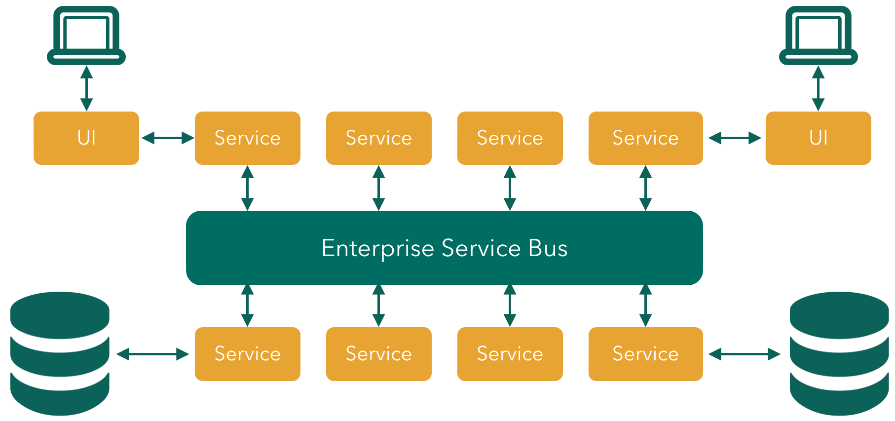
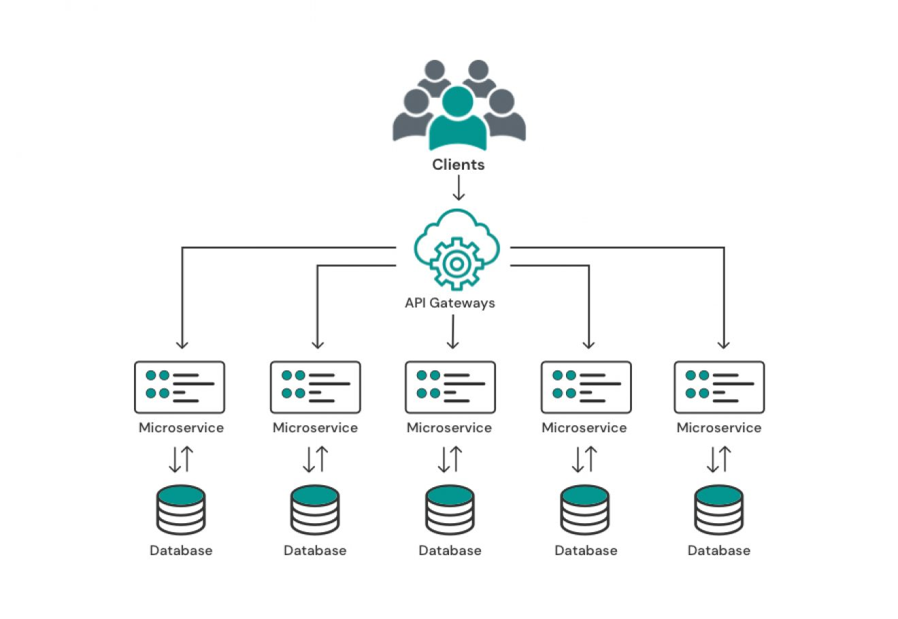

Transform Your Digital Presence
We create innovative digital solutions that drive growth and elevate your brand. From web development to digital marketing, we're your partners in digital transformation.

I software sono nati inizialmente per essere una singola entità, sviluppato con un solo linguaggio di programmazione e un solo eseguibile che gestisce tutto. Col tempo, questo sistema è diventato inefficiente perché presenta diversi svantaggi, che vanno dalla scalabilità, ai problemi di resilienza passando per gli aggiornamenti. Per questi motivi sono nate due architetture più complesse e che permettono la divisione del lavoro.
SOA service oriented architecture
L’architettura SOA è un sistema informatico in cui ci sono servizi che comunicano tra loro attraverso un sistema centralizzato chiamato Enterprise Service Bus. L’ESB è il cuore dell’architettura e si occupa di gestire tutte le comunicazioni tra i servizi, indirizzare le richieste al servizio corretto, trasformare i dati, controllare la sicurezza e registrare i log delle operazioni. Ogni servizio in una SOA è indipendente nelle sue funzioni ma collegato agli altri attraverso l’ESB. I servizi sono di solito completi e utilizzano database condivisi. Se il sistema deve crescere, si può effettuare una scalabilità orizzontale aggiungendo server o istanze per migliorare le prestazioni e la capacità di resistere ai guasti. In questo modo eventuali problemi non bloccano l’intero sistema. SOA è nata nei primi anni Duemila per aiutare le aziende a collegare tra loro sistemi diversi. È molto utile nei contesti dove ci sono molte applicazioni da integrare, ma è anche più complessa da gestire rispetto ad altri modelli più recenti. Un esempio tipico è un’azienda che possiede un servizio per la fatturazione, uno per la gestione degli ordini e uno per l’assistenza clienti. Tutti questi servizi comunicano attraverso l’ESB.

MA - Architettura a Microservizi
L’architettura a microservizi è un’evoluzione della SOA. In questo caso il sistema è diviso in tanti servizi più piccoli e indipendenti. Non c’è più un ESB centrale: ogni microservizio comunica con gli altri tramite API leggere, di solito REST o protocolli simili. Le richieste dei client passano attraverso un API Gateway che smista le chiamate al microservizio corretto. Ogni microservizio possiede il proprio database e può essere sviluppato, aggiornato e distribuito separatamente dagli altri. Questo rende il sistema più flessibile e più semplice da scalare. La scalabilità può essere fatta solo sul microservizio interessato, senza modificare gli altri. Inoltre, se un microservizio ha un problema, il resto del sistema continua a funzionare. Questo modello è adatto allo sviluppo su piattaforme cloud e a metodologie di lavoro agili, perché permette ai vari team di lavorare in parallelo su parti diverse dello stesso progetto. Un esempio può essere un sito di e-commerce con un microservizio per i pagamenti, uno per il carrello, uno per la gestione degli utenti e uno per le spedizioni. Se quello delle spedizioni si blocca, gli altri continuano a funzionare.
Perché si passa da SOA a Microservizi
Il passaggio da SOA a microservizi non è casuale: è motivato da esigenze concrete delle aziende moderne. Con il tempo, la SOA ha mostrato limiti legati alla rigidità e alla centralizzazione, che rendevano difficile adattarsi rapidamente ai cambiamenti del mercato e alle nuove tecnologie.
Velocità di rilascio
In SOA, ogni modifica richiedeva approvazioni, coordinamento tra team e aggiornamenti di servizi complessi. Questo rallentava l’innovazione e la possibilità di reagire rapidamente. I microservizi risolvono questo problema perché ogni servizio può essere sviluppato, testato e distribuito in autonomia, senza dipendere dagli altri componenti. Questo permette cicli di rilascio più brevi e frequenti.Scalabilità mirata
Con SOA, per gestire un aumento del carico spesso si dovevano scalare interi blocchi di servizi, con costi elevati e inefficienza. Nei microservizi, invece, è possibile scalare solo il servizio che ne ha bisogno: ad esempio, durante un picco di traffico in un e-commerce, si può scalare solo il microservizio che gestisce i pagamenti, senza aumentare le risorse per l’intero sistema.Resilienza
In un’architettura SOA centralizzata, il malfunzionamento di un componente critico o dell’ESB poteva compromettere l’intero sistema. I microservizi isolano i guasti: se un servizio cade, gli altri continuano a funzionare, riducendo i downtime e migliorando la continuità operativa. Flessibilità tecnologica SOA imponeva standard rigidi per linguaggi, database e protocolli, limitando la libertà dei team di sperimentare e scegliere le tecnologie migliori per ogni funzione. I microservizi consentono invece di adottare strumenti diversi a seconda delle necessità, accelerando l’innovazione e la capacità di adattamento.Compatibilità con Cloud e DevOps
L’adozione dei microservizi è favorita dalla compatibilità con le pratiche moderne di cloud e DevOps. Tecnologie come container, orchestratori e pipeline CI/CD richiedono servizi indipendenti e modulari. I microservizi si integrano naturalmente in questo ecosistema, mentre la SOA, nata in un’epoca precedente, si adatta con maggiore difficoltà.Conclusione
In sintesi, il passaggio da SOA a microservizi è guidato da cinque esigenze principali: velocità, scalabilità mirata, resilienza, flessibilità tecnologica e compatibilità con il cloud/DevOps. Non si tratta di un semplice cambio di moda, ma di una scelta strategica per rendere i sistemi più agili, efficienti e affidabili.Descrizione microservices
Un’architettura a microservizi è un modello in cui un’applicazione è scomposta in molti servizi più o meno indipendenti, ciascuno responsabile di una certa funzionalità o ambito di business.
Ogni microservizio:
È autonomo: ha un proprio ciclo di vita (sviluppo, test, deploy) e può essere aggiornato o modificato senza influenzare gli altri. È loosely coupled: i servizi dipendono il meno possibile l’uno dall’altro, in modo che eventuali modifiche o problemi in uno non si ripercuotano sugli altri. Ha il proprio stack tecnologico: un insieme di tecnologie, linguaggi e strumenti scelti per le proprie esigenze, oltre al proprio database. Questo serve ad evitare che i servizi si “incrocino” a livello di dati e a garantire maggiore indipendenza. Comunica tramite protocolli leggeri: i microservizi parlano tra loro usando metodi semplici, veloci e poco costosi (in termini di risorse).
Un grande vantaggio dei microservizi è la scalabilità: ogni servizio può essere potenziato singolarmente se riceve più richieste, senza dover modificare l’intera applicazione. Inoltre, i microservizi possono essere distribuiti e aggiornati in modo indipendente, permettendo di aggiungere nuove funzioni o correggere errori più rapidamente.
Anche la manutenzione risulta più semplice, perché ogni servizio è più piccolo, facile da capire e da testare. Spesso, ogni microservizio viene gestito da un piccolo team dedicato, che può lavorare in modo indipendente dagli altri.
Tuttavia, questa architettura porta anche alcune difficoltà, come una maggiore complessità nella comunicazione tra i servizi, la necessità di monitoraggio costante e una gestione più accurata dell’infrastruttura.
Protocolli
I microservizi utilizzano diversi protocolli di comunicazione a seconda che la comunicazione sia sincrona o asincrona e se sia interna o esterna. I protocolli più comuni includono HTTP/REST per la comunicazione sincrona, AMQP per la messaggistica asincrona e gRPC per le chiamate di procedura remota ad alte prestazioni. La scelta del protocollo dipende dal caso d'uso specifico, come la comunicazione tra servizi all'interno di un cluster o con sistemi esterni. Protocolli sincroni
HTTP/REST: Molto comune per la comunicazione sincrona (richiesta/risposta), specialmente quando i servizi devono essere esposti pubblicamente.
gRPC: Un framework per le chiamate di procedura remota ad alte prestazioni, spesso usato per la comunicazione interna tra microservizi.
TCP: Può essere utilizzato per la comunicazione tra servizi, specialmente in formati binari, per una maggiore efficienza. Protocolli asincroni
AMQP: Un protocollo di messaggistica standard utilizzato per la comunicazione asincrona e affidabile tra i microservizi, spesso tramite broker di messaggi. Messaggistica asincrona generica: Si basa sull'invio e la ricezione di messaggi, che possono essere in formati diversi come JSON o XML. Altri protocolli
SOAP: Un protocollo standardizzato, spesso associato ai servizi web tradizionali, che può essere utilizzato anche per la comunicazione con altri sistemi esterni.
XML-RPC: Un altro protocollo per la comunicazione tra i servizi.
Protocolli di transazione distribuiti: Per gestire transazioni complesse che coinvolgono più microservizi, vengono utilizzati protocolli come XA, Long-Running Actions (LRA) e try-confirm/cancel (TCC).
Caratteristiche principali
1. Servizio unico / Single Responsibility
Ogni microservizio è progettato attorno a una singola funzionalità di business ben definita, non a un insieme eterogeneo di compiti. Autonomia e deploy indipendente
2. Ogni servizio può essere sviluppato, testato, distribuito e scalato in modo indipendente dagli altri. Ciò aumenta l’agilità e riduce i rischi sul rilascio.
3. Accoppiamento debole (Loose coupling)
I microservizi sono “leggeri” nelle dipendenze reciproche: comunicano tramite interfacce (API) ben definite, riducendo l’impatto delle modifiche.
4. Dati decentralizzati / Proprietà dei dati per servizio
Ogni microservizio gestisce il proprio storage/database, evitando database applicativi condivisi che causano dipendenze forti e complessità.
5. Scalabilità e resilienza
È possibile scalare solo il microservizio che ne ha bisogno (in orizzontale, ad esempio), e un guasto in un servizio non necessariamente compromette l’intera applicazione.
6. Organizzazione attorno al dominio di business
L’architettura viene spesso strutturata ragionando in termini di domini (domain-driven design) piuttosto che solo layer tecnici.
7. Tecnologie eterogenee e indipendenza tecnologica
Ogni servizio può usare il linguaggio, il framework, il database che più si adattano al suo scopo (“polyglot persistence”, “polyglot programming”).
8. Osservabilità, Fail-fast, tolleranza ai guasti
In un sistema distribuito occorre prevedere il fallimento di un servizio. Vengono quindi adottati pattern come circuit breaker, retry, fallback; monitoraggio, logging e tracing diventano fondamentali.
9. Automazione, CI/CD, contenitori / cloud-native
I microservizi spesso nascono o sono implementati in ambienti che supportano containerizzazione, orchestrazione (es. Kubernetes), e pipeline di integrazione e distribuzione continue.
Quando conviene e quali i trade-off
Vantaggi: maggiore agilità, capacità di cambiamento locale (senza toccare tutto), migliore scalabilità, autonomia dei team, possibilità di scegliere tecnologie specifiche per ciascuna parte del sistema.
Sfide: complessità dei sistemi distribuiti (network, latenza, consistenza dei dati), gestione delle versioni delle API, operazioni più complesse (monitoraggio, distribuzione, test), individuazione della giusta granularità dei servizi.
Sitografia:
https://universeit.blog/architettura-a-microservizi/
https://aws.amazon.com/it/compare/the-difference-between-soa-microservices/
https://developer.ibm.com/articles/why-microservices/
https://martinfowler.com/articles/microservices.html
https://www.atlassian.com/microservices
https://aws.amazon.com/microservices
https://aws.amazon.com/microservices
https://microservices.io/post/architecture/2023/03/28/microservice-architecture-essentials-loose-coupling.html
https://www.ibm.com/think/topics/microservices